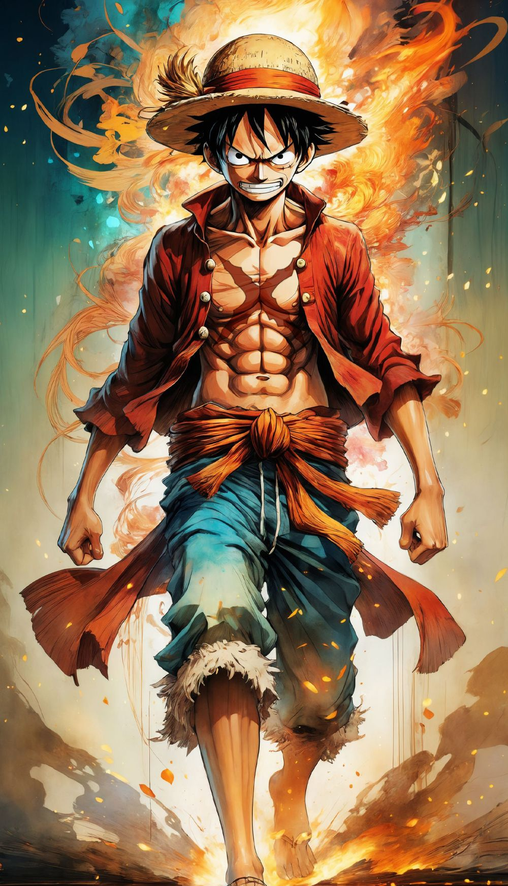
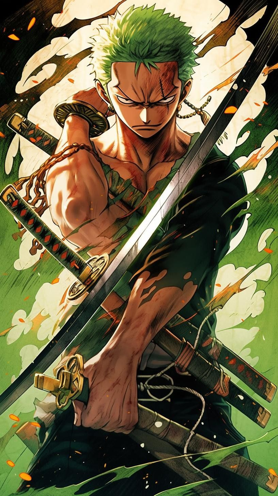
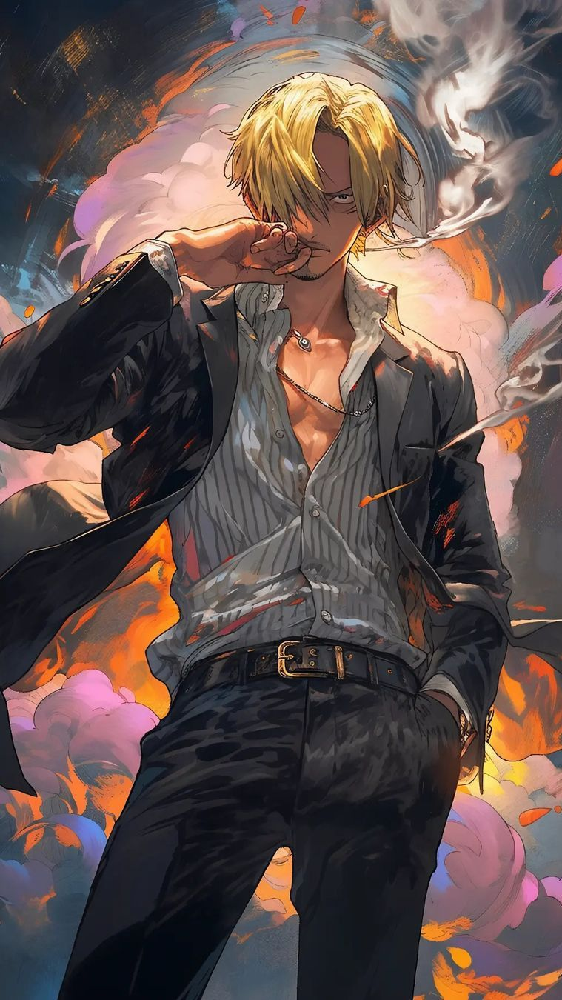
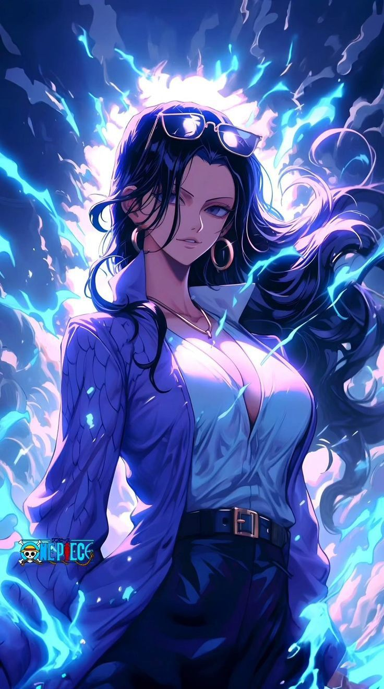

ACTION/ADVENTURE

MONKEY D. LUFFY
(captain)
Monkey D. Luffy, commonly known as "Straw Hat Luffy" or simply "Straw Hat", is the founder, captain, and strongest combatant of the increasingly infamous and powerful Straw Hat Grand Fleet

RORONOA ZORO
(swordsman)
Roronoa Zoro, also known as "Pirate Hunter" Zoro, is a main combatant of the Straw Hat Pirates, one of the Senior Officers of the Straw Hat Crew, and is recognized as the right-hand man of Luffy.

VINSMOKE SANJI
(chef)
"Black Leg" Sanji, born as Vinsmoke Sanji, is the cook of the Straw Hat Pirates and one of the Senior Officers of the Straw Hat Grand Fleet. He is the fifth member of the crew and the fourth to join.

NICO ROBIN
(archeologist)
Nico Robin, also known by her epithet "Devil Child" and the "Light of the Revolution", is the archaeologist of the crew and one of the Senior Officers of the Straw Hat Grand Fleet. She is the 7th member of the crew.
NEWS
What Is Shiro Shiro No Mi?
One Piece has introduced a surprising number of devil fruits into the series, each serving its own unique purpose. While some devil fruits can turn the most skilled fighters into absolute powerhouses, others can make the user a one-person wrecking crew. Shiro Shiro no Mi falls into the latter category. The fruit was responsible for Capone Bege’s fame and infamy in the One Piece series.
Netflix’s 'One Piece’ Filming Update
If you believed our ship would sink as we sail across the Grand Line, think again. Netflix's One Piece is letting down and sails and going even further. The live-action anime adaptation dropped on Netflix last year and became an instant success, breaking records for the streamer early on. With over 18.5 million views and over 140 million hours watched in its first week, One Piece was soon renewed for a second season soon after. Now it seems Netflix will hoist the colors of the show even higher, as the third season will be filmed straight after the second, according to one of its stars.
EIICHIRO ODA
Popular Japanese manga artist who was best known for his work on the One Piece series, which became the highest-selling manga series of all time, with more than 490 million copies in circulation. He was voted the fifth most popular manga artist in Japan.